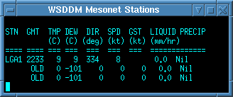
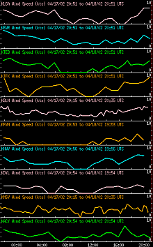

<
PANYNJ WSDDM User Manual
Click on images below or in table of contents to go to section of interest

|
Table of Contents
|
 |
The WSDDM Display is composed of multiple windows, displaying data
in various forms. The main plan view window on the left provides Radar
and motion vectors, along with Metar station model plots as graphics
images. The windows on the right provide decoded Metar and Surface
station data, along with time history plots and precip forecasts as
text and time plots. Click in the plan view display (CIDD)* with the
left mouse button to force the tabular displays to sort the station in
distance order from the click point.
* Configurable Interactive
Data Display
The main display window has a menu bar area above the plan view graphic image.
The buttons in the menu bar allow the user to toggle features on and off, or to pop
up sub panels with additional menu options.
- LOOP - Turns the movie loop on and off.
- FIELDS... - Displays the Field Sub Menu
- VIEW... - Displays the preset View Sub Menu
- OVERLAYS... - Displays the Overlays Sub Menu
- Station Plots... - Displays a menu for selecting different styles of Station Plots
- Vectors - Turns Storm Motion Vectors on and off
- Movie... - Displays the Movie loop control panel
- REPORT - Turns on/off a display of the data values at the cursor position
- RESET - Reset the display to the default state.
- URL... - Displays a URL menu for quick access to selected web sites.
- HELP... - Displays this document in a browser
Directly below the menu bar is the time and flight level information bar. This
bar shows:
- Data time and frame sequence: the frame, date and time selected,
- Product elevation: Radar tilt angle or MSL altitude
- Current date and time: UTC
Margins and Legends

- Left Margin Latitude scale
- Top Margin Longitude scale
- Legend 1 Main product info. Date and time of the product being displayed
- Legends 2+ Date and time for the Motion Vectors
- Bottom Margin Time scale. - Click in this margin to shift in time.
-
- Right Margin Color scale. An optional height scale may appear on the right side of the screen.
Changing Height/Elevation Back to top
To change the elevation level, click the left mouse button in the
height margin. You can also step up and down in height
by pressing the up or down arrow key on the keyboard. Note: Some data may not be
volumetric (3D), and thus the user cannot move up or down in height.
Note: for this to work,
the pointer must be within the main display window.
To change the time, click with the left mouse button in the time scale margin.
Pressing the left or right arrow keys on the keyboard also moves the time by one frame.
Note: for this to work,
the pointer must be within the main display window.
Changing the View - Zooming and PanningBack to top

| The view menu allows you to select pre-defined domains. There are also buttons that allow you to save custom zoom states and return to the saved states.
Custom Zoom: Use the left-mouse button (click and drag)
to define an arbitrary region. This user-defined region becomes the
current zoom and will cause the 'Current' button to be selected. Unzoom
by choosing one of the pre-defined domains.
Panning:
You can pan or move the image with the middle mouse button: Click on
a point and drag it to the desired location, then release.
Saving zoom states: To save the current zoom, click on 'Save 1',
'Save 2', or 'Save 3'. To go back to the saved view, click on 'Goto 1',
'Goto 2', or 'Goto 3'.
|
 |
The 'Field or Page' menu (see left Fig.) is a pop-up menu for selecting
a desired data set page. Select the desired page by clicking on the
appropriate button. Click on 'Field/Page' again in the menu bar to remove
the menu. |
 |
The 'Overlay or Page' menu (see left Fig.) is a pop-up menu for selecting
desired map overlays. Select the desired map by clicking on the
appropriate button. Click on 'Overlays...' button again in the menu bar to remove
the menu
NOTE: Many map features are visible only in certain zoom states. Typically,
maps are set up to reveal additional detail as the user zooms in to smaller
and smaller domains. |
|
The 'URL' menu (see left Fig.) is a pop-up menu for sending a browser to
a desired web page. Select the desired page by clicking on the
appropriate button.
the menu. |
Toggling the Vectors button turns motion vectors on and off.
The density of wind barbs is automatically adjusted as the user zooms in.
The density of wind vectors is kept between 10-20 wind barbs across the
screen, even though there may be hundreds of wind grids cells across
the screen in the data. If the user zooms in far enough, all possible
vectors or barbs are plotted.

The movie control panel has two main sections. The upper half of the panel contains controls
for manipulating the movie animation. The lower half contains indicators showing the
presence of data along the time line.

| You can start and stop the movie by clicking this button.
You can also step through the
frames by hitting the left arrow key (go back) or right arrow key (go forward)
on the keyboard.
For this to work, the pointer must be in the main window.
|
|
| The display may be run in 'Realtime' or 'Archive' mode. In real-time mode, new
data is added to the end of the movie loop as it arrives and the loop advances
as time passes. Realtime mode is the default behavior of a live system such
as WSDDM. In archive mode, the movie loop remains static, it does not move as time passes,
and the display does not check for new data. Archive mode is used for viewing
old data for analysis purposes. To set the display to archive mode, click on
the Archive button.
|

| Set the desired movie start time in the top text box that reads 'Movie Loop
Starts at:' The data entered is:hour:minute month/day/year. You can
either use the format presented in the time text box, or you can just enter
numbers separated by spaces.(Remember to hit "Enter" when you are done.)
To return to real-time mode, click on the 'Real Time' button on the movie panel
|
 |
You can change the number of movie frames in three ways:
- Enter the number of frames at the text entry point
(Remember to hit "Enter" when you are done)
- Click on the up/down arrows next to the 'Number of Frames'entry box
- Drag either the start or finish solid triangles, at either end of the movie
bar, to change its start or finish time.
|

| Sweep Button: Use the Sweep Button to enter sweep mode. In sweep mode the movie goes forwards
and backwards in sequence, instead of just forwards.
|

| This changes the movie frame time interval. Enter the number of minutes per
frame in the text box. (Remember to hit "Enter" when you are done.)
|

| Speed Slider Bar
The 'Speed' slider bar in the Movie Control Panel controls the speed of the
animation loop. Move the slider further to the right side to increase the speed.
|

| Delay Slider Bar
The 'Delay' slider bar controls the length of time the animation delays on the
last frame. Move the slider further to the right side indicating a longer
delay.
|
 |
Data Availability and Loop Coverage
The lower half of the panel is a graphical display which shows, from top
to bottom, the "movie bar", a bar showing the span of the current movie
extent, and the frame divisions, the available data with tick lines
showing when symbol data exist and tiny squares showing when gridded
data exists , and a selectable time scale in the bottom margin. The
enlarged dots indicate a which data grids are currently visible. |
|
Movie Bar Click on a frame to move to that frame.
Click and Drag
on the start or finish solid triangles, at either end of the movie bar,
to extend or shorten the movie loop. This will add or decrease the number of
animated frames. Click and drag on the central section
of the Movie Bar to shift the loop in time, leaving the number of animated frames
intact. |
 |
Each vertical tick mark represents one binary record of data of the type listed, created
at the indicated time. The small squares represent gridded data files, valid at the indicated time.
The larger sized squares show grids currently on the screen. |
| |
| Click on the Time axis to move to the frame closest to the chosen time. |
Decoded METAR Text Window Back to top
 |
The decoded METAR text program displays metar data in tabular form, sorted by distance
from the click point.
To update the window, select the desired METAR station by clicking in
the main display window close to the METAR station of interest. The METAR
text window will be updated with the latest reporting METAR information
for that station and nearby stations. The closest station will appear at
the top of the list. The data is in time-reverse order with the latest
observations at the top.
|
PANYNJ Mesonet Text Window Back to top
|  |
The PANYNJ Mesonet text window displays data from the local, high resolution
precip gauges. The data on this window updates every minute, providing the
most up-to-date data on the screen.
|
PANYNJ Precip Trend Plots Back to top
 |
The PANYNJ Snow and Precip text window displays traces of radar intensity (YELLOW)
and Precipitation accumulation at a station of choice. Place the mouse cursor in the
window and press and hold the right button to pop up a station choice menu.
The plot is a scrolling time display, with the current time indicated by a red
vertical line. To the left of the Now line, solid lines should appear which represent
measured, actual data. The dotted lines on the right represent the current prediction
for both the radar return over the gauge as well as how much precipitation (liquid equivalent)
will fall into the gauge. The Radar updates every 6-10 minutes, while the gauge data
update every 1-2 minutes. New radar and precip predictions are updated every 6-10 minutes.
|
METAR/Surface Station Time History Window
Back to top
 |
This program displays data traces, plotted over time of
METAR and Surface stations. To change the field, right-click to display the menu and
select the desired field.
To view all parameters from a single station, right-click to display the menu and
select a Station Identifier.
|
METAR/Surface Station Time History Window
Back to top
|  |
This program will also plot stations closest to the click point.
When configured to do this, the display will display the closest N stations,
sorted in order of their distance from the chosen point.
|